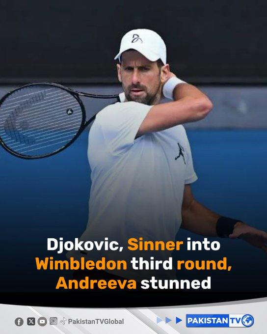

@PakTVGlobal
📝 原文: Novak Djokovic produced a Wimbledon masterclass as the history-chasing star raced into the third round on Wednesday, while defending champion Jannik Sinner battled through before French Open champion Mirra Andreeva suffered a shock exit.#Wimbledon#NovakDjokovic#JannikSinner
🇨🇳 译文: 诺瓦克·德约科维奇 (Novak Djokovic) 上演了一场温布尔登大师班，这位追寻历史的明星在周三进入了第三轮，而卫冕冠军扬尼克·辛纳 (Jannik Sinner) 在法网冠军米拉·安德烈娃 (Mirra Andreeva) 出局之前奋力拼搏。#温布尔登#诺瓦克·德约科维奇#JannikSinner


🕒 2026-07-02T03:24:36+00:00